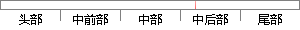

USL是User Show Layer 的简称，意为表现层，即用与用户进行直接交互的一层。
片段位置图

相似结果|
1
原句片段：USL是User Show Layer 的简称，意为表现层，即用与用户进行直接交互的一层。
相似片段 1：用户界面表示层(USL) User Show Layer 业务逻辑层(...通常情况下,客户端不直接与数据库进行交互,而是通过...完善的三层结构的要求是:修改表现层而不用修改逻辑层...
相似片段 2：用户界面表示层(USL: user show layer) 业务逻辑层...通常情况下,客户端不直接与数据库进行交互,而是通过...完善的三层结构的要求是:修改表现层而不用修改逻辑...
|
※ 片段修改建议 ※
近似词参考：- 表现：表示 浮现 施展阐发 体现 显露 显示
- 进行：举行
系统自动生成语句：USL是User Show Layer 的简称，意为表示层，即用与用户举行直接交互的一层。
注：本片段修改建议为系统自动生成，仅供参考。